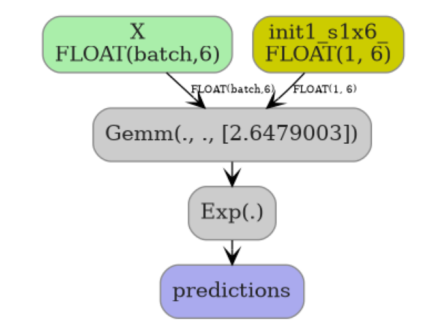

Note
Go to the end to download the full example code.
Converting sksurv IPCRidge to ONNX#
This example converts a
sksurv.linear_model.IPCRidge survival regression model into ONNX
using yobx.sklearn.to_onnx().
IPCRidge fits a Ridge regression on
log-transformed survival times weighted by the Inverse Probability of
Censoring Weights (IPCW). At prediction time it applies:
y = exp(X @ coef_ + intercept_)
to map predictions back to the original time scale.
The converter encodes this as a two-node ONNX graph:
X ──Gemm(coef, intercept, transB=1)──Exp──► predictions
import numpy as np
import onnxruntime
from sksurv.linear_model import IPCRidge
from sklearn.pipeline import Pipeline
from sklearn.preprocessing import StandardScaler
from yobx.doc import plot_dot
from yobx.sklearn import to_onnx
1. Build a synthetic survival dataset#
IPCRidge expects a structured-array target
with two fields: a boolean event indicator and a positive float survival
time.
rng = np.random.default_rng(0)
n_samples, n_features = 100, 6
X_train = rng.standard_normal((n_samples, n_features)).astype(np.float32)
time_train = rng.exponential(scale=10, size=n_samples)
event_train = rng.choice([True, False], size=n_samples)
y_train = np.array(
[(e, t) for e, t in zip(event_train, time_train)], dtype=[("event", "?"), ("time", "f8")]
)
print(f"Training samples : {n_samples}")
print(f"Features : {n_features}")
print(f"Events observed : {event_train.sum()} / {n_samples}")
Training samples : 100
Features : 6
Events observed : 44 / 100
2. Fit and convert a standalone IPCRidge#
We fit the model, convert it to ONNX, then verify that the ONNX output matches sklearn’s predictions on a held-out test set.
reg = IPCRidge(alpha=1.0)
reg.fit(X_train, y_train)
X_test = rng.standard_normal((20, n_features)).astype(np.float32)
onx = to_onnx(reg, (X_test[:1],))
print(f"\nONNX model opset : {onx.opset_import[0].version}")
print(f"Number of nodes : {len(onx.graph.node)}")
print("Node op-types :", [n.op_type for n in onx.graph.node])
sess = onnxruntime.InferenceSession(onx.SerializeToString(), providers=["CPUExecutionProvider"])
onnx_pred = sess.run(None, {"X": X_test})[0] # shape (N, 1)
sk_pred = reg.predict(X_test) # shape (N,)
print("\nFirst 5 predictions (sklearn) :", sk_pred[:5].round(4))
print("First 5 predictions (ONNX) :", onnx_pred[:5, 0].round(4))
assert np.allclose(sk_pred, onnx_pred[:, 0], atol=1e-4), "Prediction mismatch!"
print("\nPredictions match ✓")
ONNX model opset : 21
Number of nodes : 2
Node op-types : ['Gemm', 'Exp']
First 5 predictions (sklearn) : [18.3287 9.5829 30.226 13.3828 32.148 ]
First 5 predictions (ONNX) : [18.3287 9.5829 30.226 13.3828 32.148 ]
Predictions match ✓
3. IPCRidge inside a sklearn Pipeline#
to_onnx() transparently handles
Pipeline objects, so preprocessing steps such as
StandardScaler are included in the ONNX graph.
pipe = Pipeline([("scaler", StandardScaler()), ("reg", IPCRidge(alpha=0.5))])
pipe.fit(X_train, y_train)
onx_pipe = to_onnx(pipe, (X_test[:1],))
print(f"\nPipeline ONNX nodes: {[n.op_type for n in onx_pipe.graph.node]}")
sess_pipe = onnxruntime.InferenceSession(
onx_pipe.SerializeToString(), providers=["CPUExecutionProvider"]
)
onnx_pipe_pred = sess_pipe.run(None, {"X": X_test})[0]
sk_pipe_pred = pipe.predict(X_test)
assert np.allclose(sk_pipe_pred, onnx_pipe_pred[:, 0], atol=1e-4), "Pipeline prediction mismatch!"
print("Pipeline predictions match ✓")
Pipeline ONNX nodes: ['Sub', 'Div', 'Gemm', 'Exp']
Pipeline predictions match ✓
4. Visualize the ONNX graph#
plot_dot(onx)

Total running time of the script: (0 minutes 0.109 seconds)
Related examples


KNeighbors: choosing between CDist and standard ONNX

Float32 vs Float64: precision loss with PLSRegression